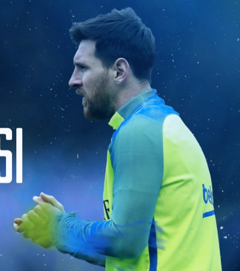

人物介绍
里奥·梅西(Lionel Messi)，1987年6月24日出生于阿根廷圣菲省罗萨里奥市，阿根廷足球运动员，司职前锋，现效力于巴塞罗那足球俱乐部。
Lionel Messi, born on June 24, 1987 in Rosario, Santa Fe Province, Argentina, is an Argentine football player, a striker and currently plays for FC Barcelona.
Read More6次金球奖
2019年12月3日金球奖最终得主揭晓，梅西获得本年度金球奖，这也是他个人第六座金球奖。成为历史第一人！
The final winner of the Golden Globe Awards was announced on December 3, 2019. Messi won the Golden Globe Award this year, which is also his sixth Golden Globe Award. Be the first person in history!
Read More6次金靴奖
凭借18-19赛季联赛36粒进球，梅西再一次获得欧洲金靴奖，同时实现欧洲金靴三连！今年10月16日，梅西领取了个人第六座欧洲金靴奖。
With 36 goals in the 18-19 season, Messi once again won the European Golden Boot Award and achieved the third consecutive European Golden Boot! On October 16, Messi received his sixth European Golden Boot Award.
Read More世界杯
2014年，梅西带领阿根廷队夺得了世界杯亚军，遗憾与冠军失之一臂。
In 2014, Messi led the Argentine team to win the World Cup runner-up, but regretted losing the championship.
Read More俱乐部生涯
2019年6月12日，美国《福布斯》公布了2019年全球运动员收入排行榜，梅西（1.27亿美元）排第一。9月24日，梅西第六次当选世界足球先生。
On June 12, 2019, the United States "Forbes" announced the 2019 global athlete income rankings, Messi (US $ 127 million) ranked first. On September 24, Messi was elected the World Footballer for the sixth time.
Read More
国家队生涯
2008年北京奥运会上，梅西随阿根廷国奥队夺取了金牌。2018年6月27日，世界杯D组末轮一场比赛，阿根廷2比1险胜尼日利亚，梅西先拔头筹。
At the 2008 Beijing Olympics, Messi won the gold medal with the Argentina Olympic team. On June 27, 2018, in the last round of the World Cup Group D, Argentina defeated Nigeria 2 to 1 and Messi took the lead.
Read More

俱乐部荣誉
2015年14-15赛季，西班牙国王杯冠军。2015年14-15赛季，欧洲冠军联赛冠军。2015年14-15赛季，西班牙甲级联赛冠军。
In the 14-15 season of 2015, the Spanish Kings Cup champion. The 14-15 season of 2015, the Champions League champion. In the 14-15 season of 2015, the Spanish League Champion.
Read More国家队荣誉
2014年巴西世界杯亚军。2015年智利美洲杯亚军。2016年美国美洲杯亚军。
Second place in the 2014 World Cup in Brazil. Runner-up of the 2015 Chilean America's Cup. 2016 US Americas Cup runner-up.
Read More